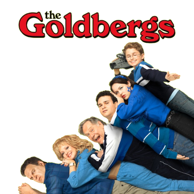

Studying Japanese Language The Japanese to English Grammar Parser
Studying Russian Language The Russian to English Grammar Parser
JavaScript Game This JavaScript Game was created entirely by ChatGPT.
Reading "Smart Women" by Judy Blume

Watching "The Goldbergs" 5.1
Watching "Welcome Back, Kotter" 3.20
Links
Pinterest is a digital picture tomb of all the things I loved in life. The Meme Math Textbook is here. Biblical Secrets are here.
The Archive contains scans of books from when we killed trees.